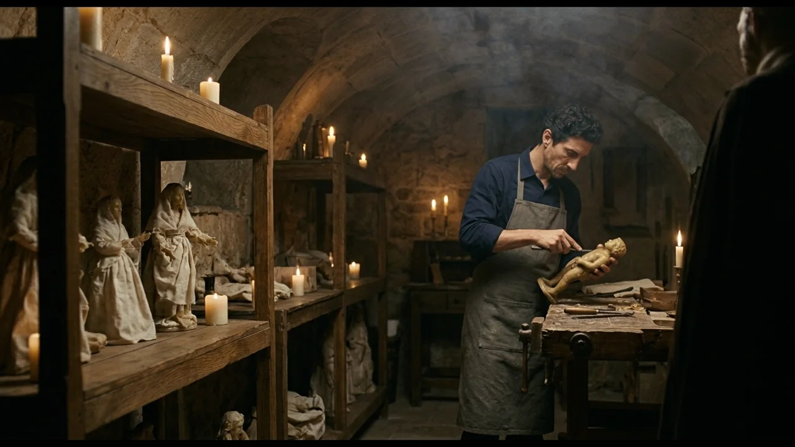
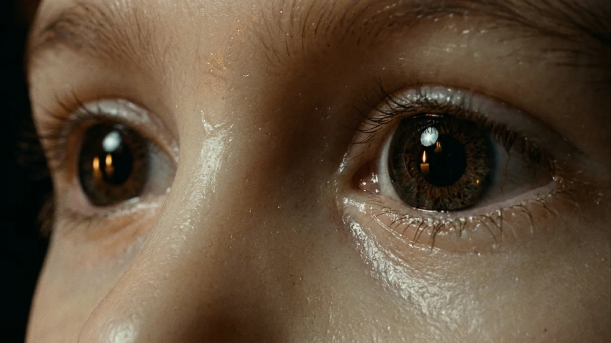
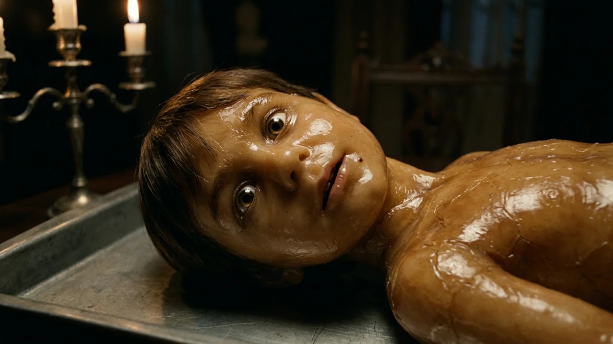
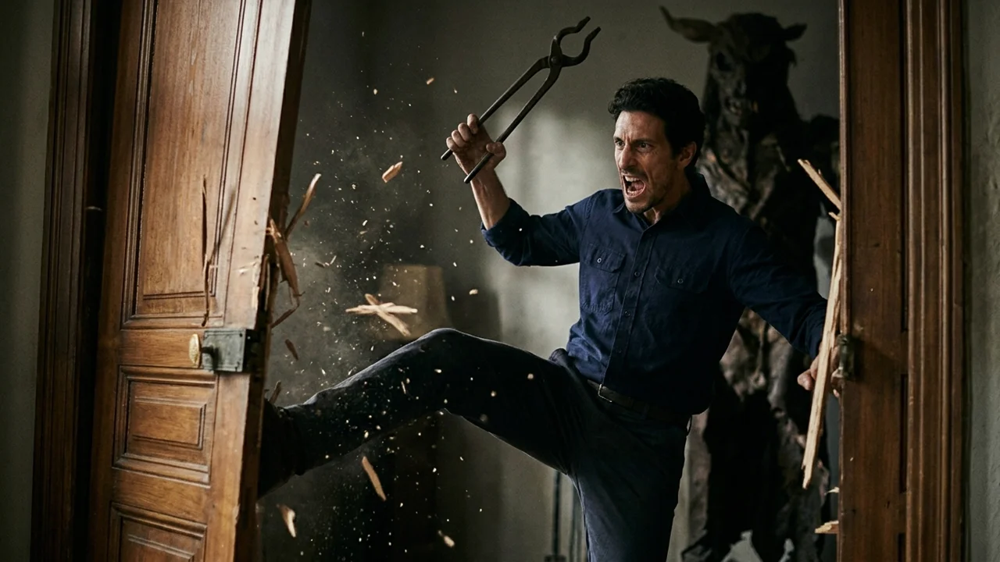
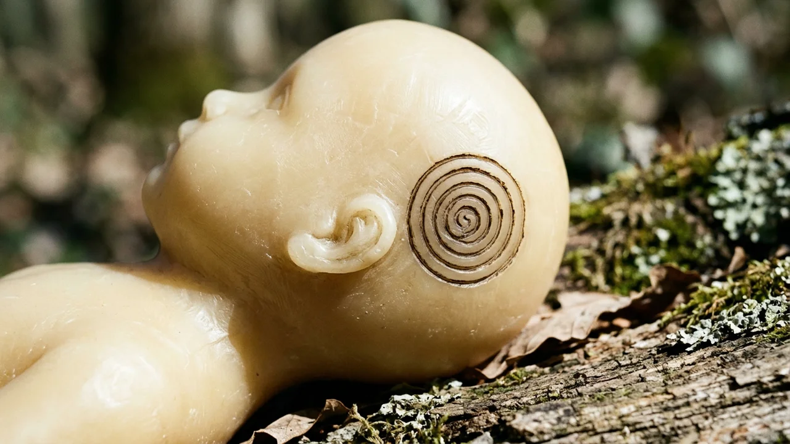

El olor a cera virgen derretida y trementina flotaba espeso en el bajo abovedado donde Samuel pasaba las horas. Con una espátula de boj templada al fuego de una vela, alisaba los pómulos de un busto de apenas treinta centímetros. Las familias de la comarca acudían a él cuando la frialdad de las lápidas les resultaba insoportable; pedían una efigie de mesa, un simulacro menudo de paño y cera purificada para acompañar los primeros meses del luto.
Afuera, la lluvia de noviembre azotaba los cristales emplomados. La campanilla de hierro sobre el dintel tintineó y Samuel alzó la vista hacia una mujer empapada bajo un abrigo negro.
—Buenas tardes —dijo Samuel, secándose los pulgares en el mandil—. Pase al calor.
La mujer avanzó despacio, arrastrando los botines húmedos. Tenía las facciones afiladas por la vigilia y una mirada fija que parecía buscar algo a espaldas del artesano. Se detuvo ante el mesón de nogal.
—Me llamo Teresa Balmes —anunció con voz seca—. Quiero que haga a Diego. Mi hijo.
Desplegó sobre la madera un envoltorio de seda con tres fotografías de un niño de seis años con jersey de lana roja, una peca en la barbilla y ojos risueños. Junto a los retratos depositó un mechón de pelo castaño atado con cáñamo.
—El agua del río se lo llevó hace dos años —prosiguió—. El silencio de la casa se vuelve más pesado cada invierno.
Samuel tomó las fotos con respeto profesional.
—Puedo tenerlo listo en siete días, señora Balmes. Usaré cera blanqueada al sol y alma de cedro.
—No —le interrumpió ella—. No use cedro. Sé que en el arcón del fondo guarda bloques viejos de cera parda mezclada con resina de tejo. La que su abuelo Evaristo guardaba en tarros de barro cocido.
Samuel se quedó inmóvil. Aquellos tarros estaban ocultos tras una arpillera en una alacena secreta.
—¿Cómo sabe eso? —preguntó, desconcertado.

—Las madres que no duermen aprenden muchas cosas, Samuel —respondió ella sin pestañear—. Y hay algo más. Cuando modele la cabeza, trace una espiral de siete vueltas detrás de la oreja izquierda con la lezna de plata. Si no lo hace, el niño no encontrará el camino de regreso.
Aquella noche, incapaz de dormir, Samuel bajó al taller. Fundió al baño María la cera oscura del arcón, que desprendía un aroma denso y terroso, muy distinto a la parafina habitual.
Trabajó con la pericia de veinte años de oficio. Ensambló el torso, ajustó las juntas de bramante y vistió la estructura con un retal rojo idéntico al de la foto. Los rasgos de Diego surgieron de la cera con una fidelidad inquietante: la comisura alzada, el tabique diminuto, la peca fingida con un punto de hollín.
Al llegar a la oreja izquierda, dudó. Tomó la lezna de plata de su abuelo y trazó los siete giros concéntricos.
Al cerrar la última vuelta, el material cedió bajo el metal con una resistencia elástica, como piel viva. Una corriente súbita hizo vacilar las velas y de la figura brotó una tibieza que no procedía del hornillo. Samuel apartó la mano de golpe. En la penumbra, los ojos de vidrio soplado del muñeco reflejaron la llama con una vivacidad que le heló la sangre.
Al día siguiente, Teresa acudió al alba. Al descubrir la figura, cayó de rodillas y acarició la mejilla de cera, arrimando el oído a su boca pequeña.
—Mamá... tengo frío —musitó Teresa, reproduciendo un murmullo que Samuel no había dicho.
—Es solo un tributo, señora Balmes —advirtió él, incómodo—. La cera no siente.
Teresa no le escuchó. Apretó el muñeco contra su pecho con fuerza desesperada y se marchó sin despedirse, dejando sobre la mesa un fajo arrugado de billetes.
Tres noches después, el teléfono sonó a las cuatro de la madrugada. Samuel descolgó sobresaltado.

—Ha cambiado de postura, Samuel —susurró Teresa. Su respiración sonaba húmeda, agitada—. Lo dejé sobre la cómoda del recibidor. Cuando bajé a beber agua estaba sentado en mi almohada, mirándome.
—Habrá sido un despiste, Teresa. El duelo produce confusiones. Venga mañana y lo revisaremos.
—¡No es un despiste! —gritó ella con voz quebradiza—. Sus labios están calientes. Me ha dicho que si no atranco las ventanas, los hombres oscuros vendrán a llevárselo otra vez.
La llamada se cortó con un chasquido.
Durante los dos días siguientes, el taller se llenó de clientes angustiados. Don Julián, el boticario viudo, se presentó con la efigie de su mujer envuelta en un paño: lloraba por las noches un aceite pardo y le susurraba al oído secretos íntimos. Luego acudieron la viuda del herrero y el maestro de escuela. Todos los muñecos entregados recientemente presentaban desplazamientos nocturnos y un olor persistente a tierra removida.
Alarmado, Samuel caminó hasta la casa de Teresa en las afueras. Los postigos estaban cerrados a cal y canto, sellados con mantas clavadas desde dentro. Samuel forzó la puerta de la cocina con un golpe seco de hombro.
El hedor interior era insoportable: una mezcla rancia de cera descompuesta, leche agria y sudor febril. En la penumbra de la sala, Teresa yacía sentada frente a la mesa camilla, con un camisón sucio y la piel pegada a los huesos. Tenía la mirada extraviada.
Sobre una bandeja reposaba el muñeco de Diego.
Samuel sintió un nudo en la garganta. La figura ya no medía treinta centímetros. Había engordado, hinchándose con una masa cerosa que alcanzaba casi medio metro. Sus extremidades reposaban con un peso anormal y bajo las mejillas latía una red de finas venas amoratadas.
—Teresa, por Dios... —susurró Samuel—. Tiene que salir de aquí.
La mujer alzó la cabeza con lentitud espectral.

—No hables tan alto... Diego se enfada. Dice que tú quieres quemarlo. Dice que si no me corto los dedos para alimentarlo, volverá a ahogarse en el río.
El muñeco giró la cabeza con un movimiento viscoso. Sus ojos de vidrio húmedo se clavaron en Samuel y de su boca surgió una voz clara y perversa:
—Hola, Samuel. Todavía me duele detrás de la oreja.
El artesano huyó despavorido por las calles desiertas y se encerró en su taller. Con el candil en la mano, abrió la trampilla que conducía al sótano de su abuelo Evaristo, cerrado desde hacía doce años.
El sótano olía a moho y serrín podrido. Samuel forzó el primer cajón de pino que encontró contra la pared. En su interior reposaban docenas de figuras antiguas de cera esculpidas medio siglo atrás. Al apartar el serrín de sus cuellos, descubrió el mismo horror: todas llevaban la espiral grabada tras la oreja izquierda.
En una hornacina halló el diario de su abuelo, encuadernado en becerro. En una página de mil novecientos cincuenta y ocho leyó:
«La cera hervida con tierra de fosa retiene el hambre. No son las almas de los muertos las que acuden al reclamo del sello; es el huésped del subsuelo. Se viste con el recuerdo de los vivos, imita su ternura y devora su voluntad hasta vaciarlos. Si el nexo no se destruye con fuego de retama antes de la luna nueva, el parásito ocupará la carne de quien lo alimenta».
Un roce sobre las losas le hizo volverse.
En el rincón más oscuro, sobre un arcón, una figura de tamaño natural reposaba erguida. Llevaba un sayal gris y una pañoleta negra sobre los hombros: era el rostro exacto de su madre, fallecida cuando él tenía siete años.
Los párpados de cera se abrieron. Dos ojos oscuros lo miraron con ternura abrumadora. La figura sonrió y una voz dulce resonó en la cripta:
—Samuelito... ven aquí. Mira cuánto has crecido, hijo mío. Deja las herramientas y acércate al calor.

Samuel sintió que el suelo se hundía bajo sus pies. Una parte profunda de su ser, la herida que nunca cerró, quiso arrojarse a sus brazos. Dio un paso hacia adelante con lágrimas en los ojos:
—Mamá... —balbuceó con la voz rota.
La figura extendió las manos. Al hacerlo, la manga resbaló hacia el codo, dejando ver una piel amarillenta de la que brotaban filamentos negros enraizados en la madera podrida. Detrás de la oreja izquierda, la espiral de siete vueltas supuraba una brea fétida.
Samuel se detuvo a un palmo de los dedos de cera. El dolor de su infancia se transformó en una furia lúcida que le devolvió el control.
—Tú no eres mi madre —dijo con voz firme—. Mi madre murió en paz. Tú solo eres el gusano que roba su nombre.
La noche siguiente, el horno de fundición del taller rugía alimentado con leña de encina y gavillas de retama seca hasta alcanzar un rojo blanco.
Samuel regresó a la casa de Teresa armado con tenazas de fragua y un saco de arpillera. Derribó la puerta de la sala. La mujer yacía en el suelo, con labios azulados y respiración agónica. Sobre su pecho, el muñeco de Diego, que ya tenía el tamaño de un niño real, le acariciaba la frente con dedos pegajosos mientras susurraba órdenes oscuras.
—¡Suéltala! —bramó Samuel.
El muñeco chilló con un aullido ensordecedor que reventó los postigos. Intentó aferrarse al pelo de Teresa, pero Samuel cerró las tenazas de hierro al cuello de la criatura y la arrancó de cuajo.
El ser se retorció en el aire, gritando con la voz de Diego:
—¡Mamá, no dejes que me queme! ¡Dile que soy tu hijo!

Teresa abrió los ojos. La bruma que nublaba su mente se quebró al romperse el contacto. Al ver la masa deforme de cera negra en las tenazas, soltó un grito desgarrador:
—¡Quémalo, Samuel! ¡Por la memoria de mi hijo, arrójalo al fuego!
Samuel corrió con la criatura chillona hasta el taller. Bajó al sótano, arrojó al saco la figura de su madre y todas las efigies antiguas, y las arrastró hasta la boca del horno.
Uno a uno, arrojó los muñecos a las llamas.
El taller se llenó de un coro espantoso de lamentos. Las figuras gritaban con las voces de los difuntos del pueblo, implorando clemencia y jurando volver a la vida. La réplica de su madre le miró desde el fuego con ojos deshechos por el calor, llamándole por su nombre con una agonía que le heló las entrañas.
Samuel atrancó la puerta del horno con una barra de hierro.
—Descansad en paz —susurró—. Descansad de una vez.
El fuego devoró la cera hasta el final. Cuando las llamas alcanzaron las vigas del techo empapadas en trementina, Samuel no intentó apagarlas. Salió a la calle empedrada y contempló cómo el taller ardía hasta quedar reducido a cenizas.
Tres meses más tarde, la primavera templaba las tapias del cementerio de la capital. Samuel vestía el mono azul de los sepultureros municipales. Había vendido las tierras de la sierra y no había vuelto a tocar una gubia. Cavar fosas y podar cipreses le brindaba una paz humilde y silenciosa.
A media mañana, un cortejo de coches negros avanzó por la avenida. Despedían a un hombre joven fallecido en un accidente de tren. Samuel aguardaba a prudente distancia, apoyado en su pala.
Una mujer con velo negro se adelantó hacia la fosa abierta. Llevaba entre sus manos enguantadas una pequeña figura conmemorativa de treinta centímetros, modelada en cera pálida con los rasgos exactos del difunto. La depositó sobre el ataúd, junto a las flores.
Samuel sintió una aguja de hielo en la nuca.
Se acercó disimuladamente mientras los familiares se alejaban. Al quedar a un paso del féretro, miró la figura. Los párpados de cera temblaron una fracción de segundo y una sonrisa rígida, casi imperceptible, curvó sus labios.
El sol de mediodía iluminó de lleno el costado de la efigie. Samuel bajó la mirada hacia su cabeza ladeada.
Detrás de la oreja izquierda, grabada en la cera virgen con una precisión impecable, refulgía la espiral de siete vueltas.